About Me

Hey! I am Tanmay, and I am a research graduate student in the School of Computer Science at the Robotics Institute, Carnegie Mellon Univeristy pursuing my Master of Science in Robotics, with 4 years of professional experience in Machine Learning and Computer
Vision split between academia and industry. I am fortunate to be advised by Prof. Jeff Schneider and work as a member of the Auton Lab. I am extremely passionate about developing large-scale human-level AI applications that can perceive, reason and make
complex decisions for real-world problems in the field of Robotics, HealthCare and Finance.
My research lies at the intersection of Machine Learning and Computer Vision, with a focus on Reinforcement Learning to
solve complex decision making problems using visual inputs. My main goal is to learn generalizable and adaptable
behaviors for self-driving cars, by developing algorithms that learn optimal decision-making policies directly from raw
sensor data by using the paradigm of Deep Reinforcement Learning.
Besides this, I am
also working on understanding how data from multiple sensors can be leveraged to learn an ideal perception stack for
2D/3D detection, segmentation and tracking.
Prior to joining CMU, I have worked with Samsung Research Institute Bangalore as a Senior Software Engineer where I worked on developing key features for the Samsung Keyboard application, at both research and production stage, using Machine Learning and Natural Language Processing. Besides this, I have also interned at JP Morgan Chase and visited Bhabha Atomic Research Centre, Mumbai, as a visiting research scholar. I was also awarded the DAAD-WISE Scholarship in 2015 to work with Prof. Sven Behnke on developing core vision algorithms for Humanoid Soccer bots. I completed my Bachelors’ degree in Electronics & Instrumentation from BITS Pilani, Pilani in 2016.
My research experiences have given me the opportunity to collaborate with numerous researchers and engineers to work on challenging real-world problems which have deeply rooted my interests in the aforementioned fields and strengthened my fundamental understanding about AI and engineering. Please reach out to me if you want to learn more about my background and experiences.
Work Experience
|
November 2018 - Present
Graduate Research Assistant |
Robotics Institute, Carnegie Mellon University
Pittsburgh, PA Auton Lab Designed end-to-end control agents for autonomous cars in CARLA simulator learned using sensor and measurement data from the environment. Implemented popular RL algorithms like A2C, DDPG, PPO and TRPO to learn efficient driving policies and compared these algorithms to understand their sample complexity. |
|
August 2016 - July 2018
Senior Software Engineer (Research) |
Samsung Research Institute
Bangalore, India Advanced Technology Lab - Multimedia Division Developed a novel geometric algorithm for virtual keyboard that predicts a word corresponding to a swipe gesture input by matching a sequence of points to the candidate word path. Designed a neural architecture that predicts probable words for the swipe gesture input in real-time by modeling a uni-directional GRU-RNN architecture with Connectionist Temporal Classification (CTC) as its loss function. Proposed framework resolves word using a weighted FST that achieves 90% accuracy in top-5 predictions and an average swipe saving time of around 0.65s. |
|
January 2016 – June 2016
Software Developer Intern |
JP Morgan Chase & Co.
Bangalore, India Risk & Finance Technology Division Developed a distributed computing application using Apache Spark that performs millions of computations on financial data in real-time. Implemented a multi-variate classifier to classify risk-type using Spark MLlib and Spark core libraries. |
|
May 2015 – July 2015
Visiting Research Scholar |
University of Bonn, Institute of Computer Science VI
Bonn, Germany Autonomous Intelligent Systems Group Developed vision algorithms for a humanoid soccer robot to detect soccer ball and goal posts in real-time. Implemented Histogram of Gradients (HOG) feature-based cascade classifier and augmented it with shape, histogram matching to achieve over 90% detection accuracy. Deployed these algorithms on a robot and awarded the RoboCup Design Award for the best Humanoid Robot Design at RoboCup 2015. |
|
Aug 2014 – Dec 2014
Visiting Researcher |
CSIR - Central Electronics Engineering Research Institute
Pilani, India Control & Automation Group Designed a fully autonomous mobile robot for indoor navigation using Microsoft Kinect sensor. Developed algorithms such as vision-based obstacle avoidance, visual odometry to position and orient the robot with respect to the environmental SURF features and EKF SLAM to map its surroundings. |
|
May 2014 – July 2014
Summer Intern |
Bhabha Atomic Research Centre (BARC)
Mumbai, India Electronics Division Worked on designing a gas leakage alarm system using customized sensors and fabricated the underlying electronics after verifying it in CAD tools. Also interfaced it with an LCD to monitor the concentration of the gas. |
Projects
| 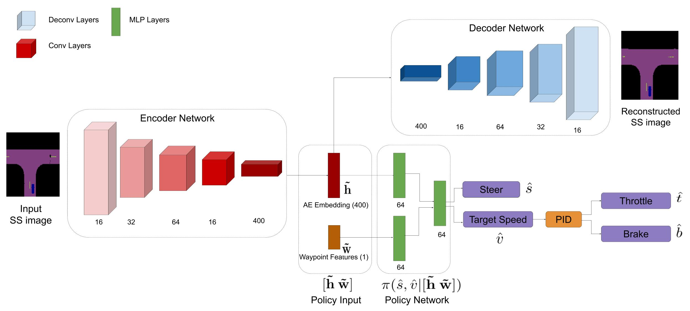 |
Learning to Drive using Waypoints
NeurIPS 2019 Workshop on Machine Learning for Autonomous Driving, 2019
Advisor: Prof. Jeff Schneider, Robotics Institute, CMU Traditional autonomous vehicle pipelines are highly modularized with different subsystems for localization, perception,
actor prediction, planning, and control. Though this approach provides ease of interpretation, its generalizability to
unseen environments is limited and hand-engineering of numerous parameters is required, especially in the prediction and
planning systems. Recently, Deep Reinforcement Learning (DRL) has been shown to learn complex strategic games and
perform challenging robotic tasks, which provides an appealing framework for learning to drive. In this paper, we
propose an architecture that learns directly from semantically segmented images along with waypoint features to drive
within CARLA simulator using the Proximal Policy Optimization (PPO) algorithm. We report significant improvement in
performance on the benchmark tasks of driving straight, one turn and navigation with and without dynamic actors.
|
| 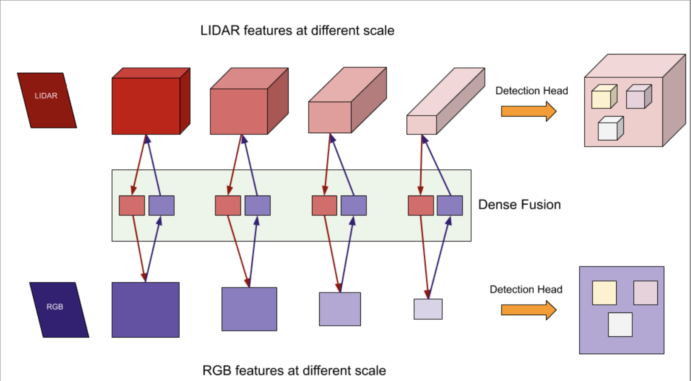 |
Argoverse: Multi-modal Multi-task 3D Object Detection
3D object detection is one of the most pivotal tasks in autonomous driving that governs major downstream tasks like
tracking, prediction, planning, and control, critical in urban environment driving. To ensure reliability and accuracy
of such system, we propose a novel multi-modal neural architecture that incorporates ideas such as dynamic voxelization,
multi-view fusion, a cross-modal coupled fusion between RGB and LiDAR, soft attention for geometric alignment, and
multi-task losses. We observe very promising results within only 8 epochs of training over 25% of the total
data and hope to contribute a novel architecture with strong performance.
|
| 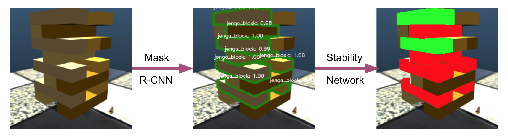 |
Visual Learning for Jenga Tower Stability Prediction
Advisor: Prof. Abhinav Gupta, Robotics Institute, CMU
Despite advances in robotics and vision, there are simple tasks such as object manipulation which are intuitive for
humans but machines struggle with. Further, more complex manipulation tasks such as stacking or de-stacking of
structures require not only dexterous manipulation abilities but also the capability to learn and predict stability of
the stack being constructed. In this work, we explore if this capability can be developed for a robot through visual
learning and recognition.
|
| 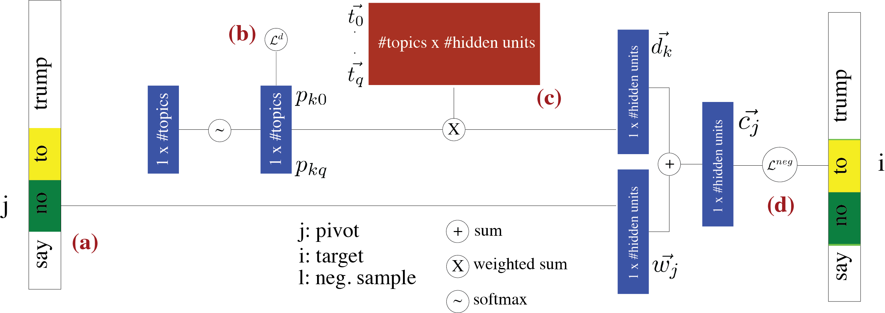 |
Semi-Supervised Stance Detection in tweets
Implemented a heuristic-based semi-supervised learning approach, LDA2Vec (Moody CoNLL 2016) for stance detection that
learns a coherent and informed embedding comparable to Para2Vec, concurrently bolstering interpretability of topics by
creating representations similar to those in Latent Dirichlet Allocation. We conclude that adding unlabelled data vastly improves the performance of classifiers by ~6% for LDA and ~20% for
Para2Vec. Overall Para2Vec seems to perform better than the Vanilla LDA. While we are able to obtain a similar quality
of topics with LDA2Vec as compared to LDA, the generated embeddings do not reflect the expected classification quality
compared to Para2Vec.
|
 |
Non-Convex Optimization for Machine Learning
Many real world machine learning problems require solving a non-convex optimization problem and this has been a niche
area of research due to non-convex problems being NP-hard to solve. In this project, we explore the space of non-convex
optimization for common machine-learning problems. We motivate the non-convex problem formulations of sparse recovery
and low-rank matrix recovery with its important real world applications and share the fundamental ideas about the two
main solution approaches: convex relaxation and direct non-convex optimization. We also explain some
of the popular non-convex optimization algorithms that have been shown to be very efficient in practice and yield
provably optimal solutions in polynomial time, such as projected gradient descent and its variants. We then discuss one
such application of sparse recovery in astronomy and share results from our implementation of start-of-the-art algorithm
(Högbom’s CLEAN) to denoise noisy spatial images.
|
| 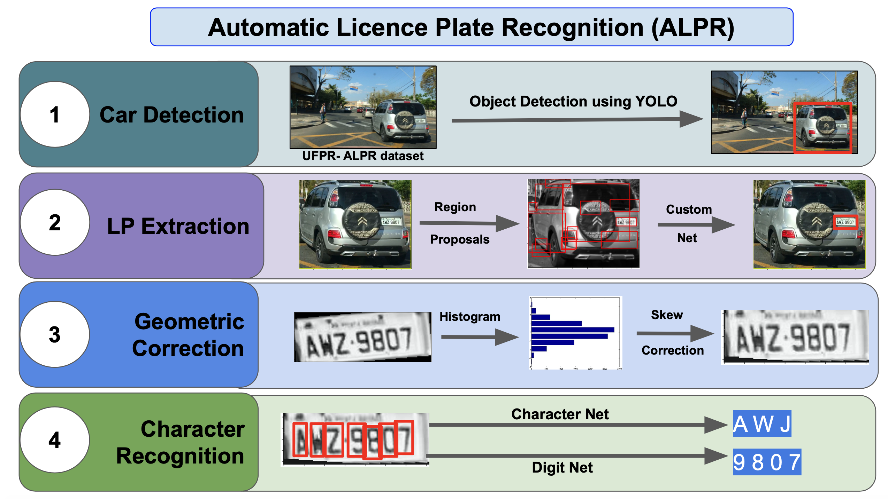 |
Automatic License Plate Recognition
Advisor: Prof. Simon Lucey, Robotics Institute, CMU
Links: [slide]
Built end-to-end system for Automatic License Plate Recognition using YOLO object
detector & deep character recognition models.
|
| 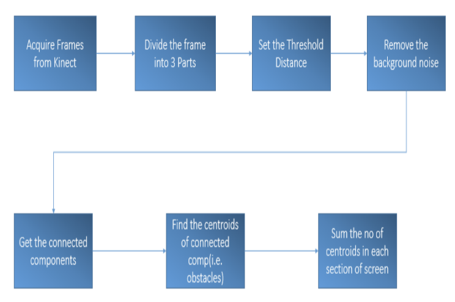 |
Autonomous bot using Embedded Vision
An autonomous mobile robot is a machine that navigates in an unknown and unpredictable environment. These robots cannot
always be programmed to execute predefined actions because one does not know in advance what will be the outputs of the
sensors that control the motor movements. Thus these robots implement cognitive computing that processes the dynamic
streams of the present situations and based on which decides it movement. These robots finds enormous applications in
space exploration and aerial surveillance systems. Simple applications include domestic cleaning bots, autonomous quad-
copter and lawn mower. This report illustrates a few basic techniques and algorithms that will used to implement an
Autonomous Mobile Robot that also constructs a 3D map of the environment using the Self Localization and Mapping (SLAM)
technique. The bot will ultimately should traverse between any two given points and find out the shortest possible path,
avoiding obstacles on its way. The report also presents the autonomous obstacle avoider developed so far, an important
milestone towards achieving the final bot.
|
| 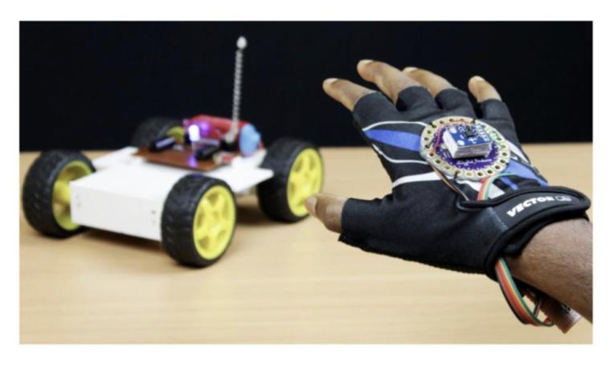 |
Control of mobile robots using Gesture Recognition
Compared performance of conventional vision based gesture recognition algorithms like background subtraction, appearance
based models with sophisticated ML approach like Haar cascade classifier in OpenCV.
|
| 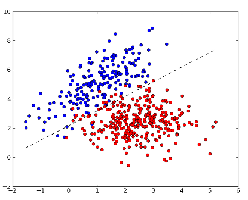 |
Binary classifiers for Medical Testing
In the modern world, every hospital is well equipped with monitoring and other data collection devices, and data is
gathered and shared in large information systems. Thus extracting meaning out of this data would prove to be very
beneficial especially where there is unavailability of proper diagnosis. Our project aims to develop a classification
model out of these data sets and generate a model that can be used to predict the most helpful diagnosis for a
particular set of symptoms. We use binary classifiers like multi-layer neural networks and decision trees to analyze and evaluate detection of heart and
nephritis diseases. Achieved accuracies over 90% on data procured from UCI Machine Learning Repository.
|
| 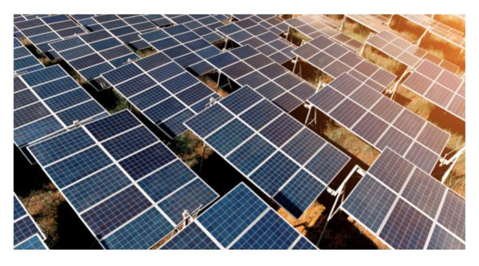 |
Predicting harnessable solar energy using weather data
Links: [code]
Implemented a multi-variate regression model to estimate harnessable solar energy
after reducing the dimensionality of
the data using PCA. Also experimented with kernel SVRs to fit a regression model.
|
| 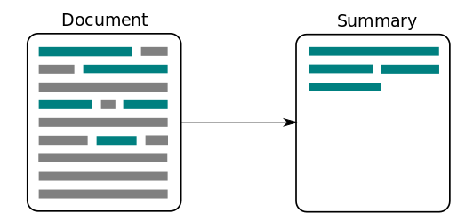 |
Automatic Story Summarizer
Designed a story summarizer using different information and text extraction methods. Compared results which concluded
that an ensemble of term-frequency and understanding based generation method produced more coherent summaries.
|
| 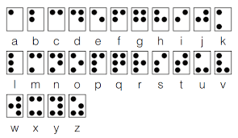 |
Unaided Braille Encryption
Developed a prototype of an e-reader for blind people, that processes any form of textual documents using Optical
Character Recognition and dynamically displays the corresponding Braille text on a two-dimensional array of Braille
cells.
|